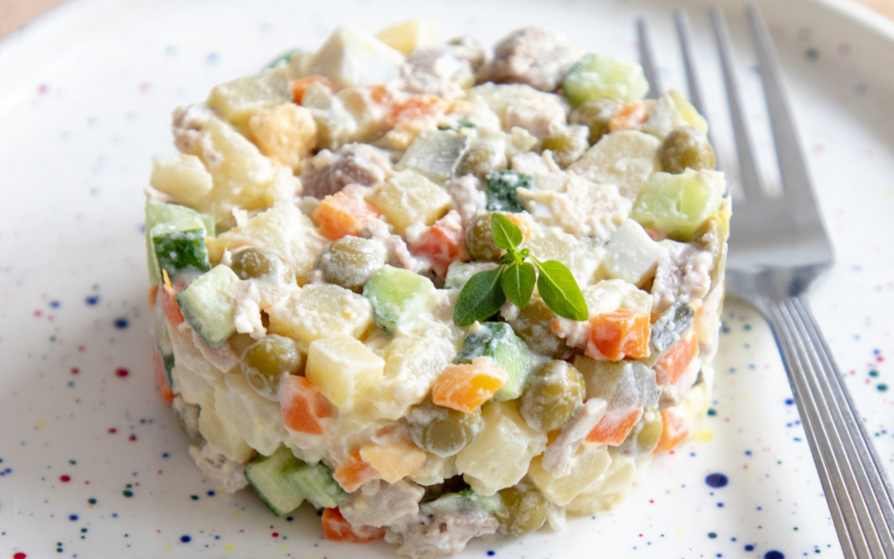

The king of salads - Olivier salad

Introduction
The Olivier salad was created by French chef Lucien Olivier in Moscow in the 1860s.
This salad gained popularity in Russia, especially as a traditional dish on New Year's tables.
Ingredients:
- Potato 200g
- Carrot 200g
- Egg 4pcs
- Beef/Chicken/Sausages 400g
- Cornichon 60g
- Mayonnaise 180g
- Green frozen peas 150g
- Mandarin 1pc
- Salt & black pepper for your taste
What to do with this stuff
- First of all, bake carrots and potatoes in the oven! Put them on a sheet of foil, salt, pepper, add a little vegetable oil.
Wrap and send them to the oven for 45 minutes at 180-200 degrees centigrade
- Then cool them down and now scrape the skin off them
- Cut the vegetables into medium sized chunks and throw them into a large bowl
- Dice the pickles into small cubes and put them in a bowl
- Pre-baked beef in foil (200 degrees centigrade - 45 minutes), cut into medium cubes and send to a bowl
- Dice the pre-boiled eggs and put in a bowl
- I prefer to use frozen peas, they give their zest and make the salad more interesting, add them to the salad
- Cut the mandarin in half and add to the mayonnaise, mix and dress the salad
- Salt, a little freshly ground pepper and mix gently!
That's the Olivier salad! Bon appetit and Happy New Year!